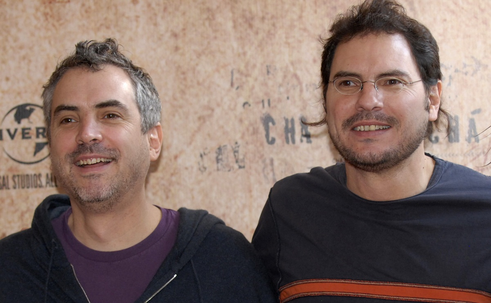
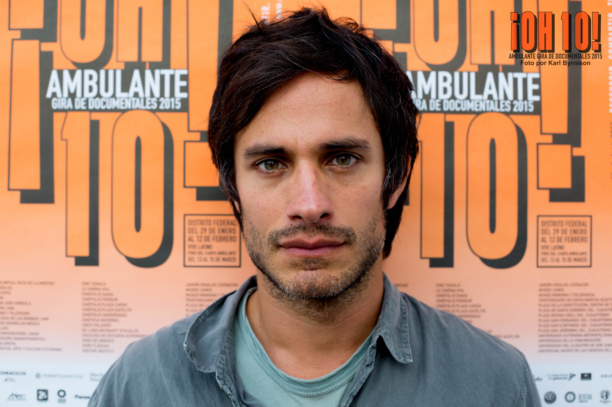
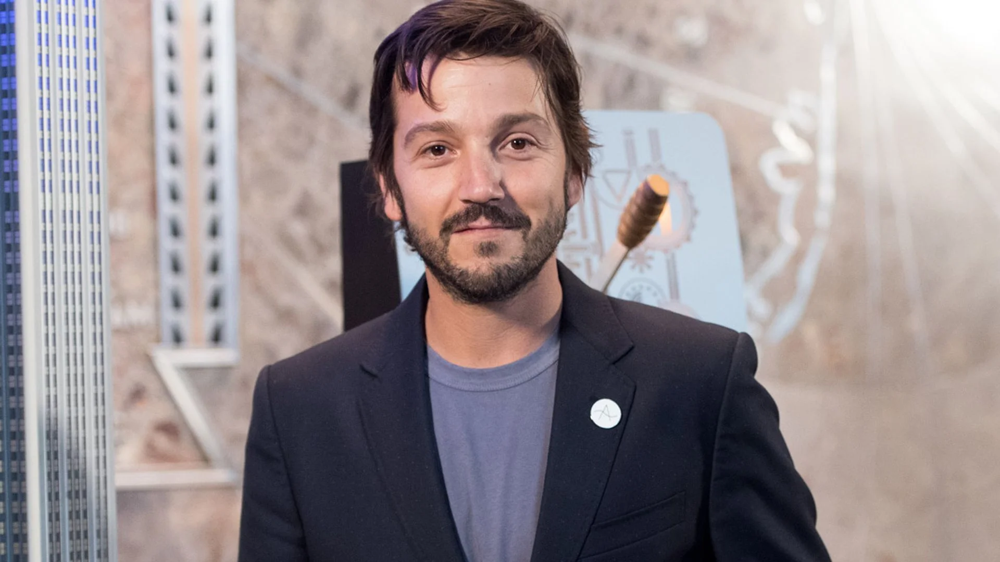
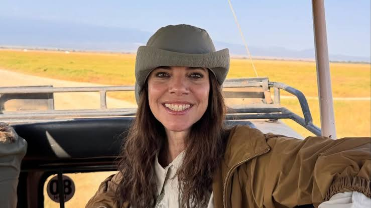

YTMT
INTEGRANTES

Alfonso y Carlos Cuarón
Alfonso y Carlos Cuarón son hermanos, los cuales trabjaron juntos en la creación de la película. Ambos trabajaron juntos en el guión. A la par, Alfonso fue el director. Alfonso dirigio peliculas como Gravity y Harry Potter y el Prisionero de Azkaban. Los hermanos son figuras reconocidas en el mundo del cine. Carlos a dirigido Rudo y Cursi.
Gael García Bernal
Gael García Bernal es un actor y director mexicano, que en este caso interpreta a Julio, uno de los protagonistas. Es conocido principalmente por su trabajo en películas como Amores Perros. Pero tambien participó en grandes proyectos como Babel, Coco y Diarios de motocicleta.


Diego Luna
Diego Luna es un actor y director mexicano, que en este caso interpreta a Tenoch, el mejor amigo de Julio. Luego de este gran proyecto formo parte de otras producciones, como Rouge One, Andor y Narcos: Mexico y Ruido.
Maribel Verdú
Maribel Verdú es una reconocida actriz española que interpreta a Luisa, quien acompaña a Julio y Tenoch en su viaje. Maribel tambien a participado en peliculas como El Laberinto del Fauno, Blancanieves y El Flash.

Emmanuel Lubezki
Emmanuel Lubezki es un director de fotografía mexicano reconocido especialemnte por tener un estilo visual muy particular. Ademas de su trabajo en Y tu mamá también, ha trabajado en producciones como Gravity, Birdman y El Renacido, proyectos por los cuales a ganado importantes reconocimientos.